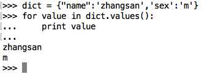

字典遍历
<1> 遍历字典的key（键）

<2> 遍历字典的value（值）

<3> 遍历字典的项（元素）

<4> 遍历字典的key-value（键值对）
练习
- 有一个列表persons，保存的数据都是字典
persons = [{'name': 'zhangsan', 'age': 18}, {'name': 'lisi', 'age': 20}, {'name': 'wangwu', 'age': 19},{'name': 'jerry', 'age': 21}]
要求让用户输入一个姓名，如果这个姓名在列表里存在，就提示用户名称已存在，添加失败；如果这个姓名在列表里不存在，提示让用户输入年龄，并将用户输入的姓名和年龄添加到这个列表里。
- 有一个字典dict1 = {"a":100,"b":200,"c":300}，使用代码，将字典的key和value互换，变成 {100:"a",200:"b",300:"c"}.
参考答案:(使用字典推导式)
dict1 = {"a": 100, "b": 200, "c": 300}
dict2 = {v: k for k, v in dict1.items()}
print(dict2)